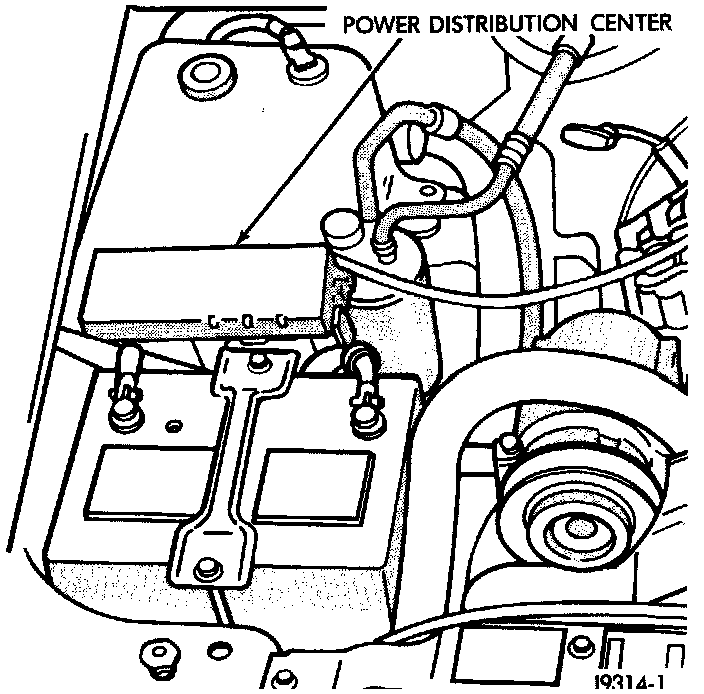

Air Conditioning (A/C) Clutch Relay
AIR CONDITIONING (A/C) CLUTCH RELAY-PCM OUTPUTFig. 13 PDC Location:

The A/C relay is located in the Power Distribution Center (PDC). The PDC is located in the engine compartment. Refer to label on PDC cover for relay location.
The Powertrain Control Module (PCM) activates the A/C compressor through the A/C clutch relay. The PCM regulates A/C compressor operation by switching the ground circuit for the A/C clutch relay on and off.
When the PCM receives a request for A/C from A/C evaporator switch, it will adjust Idle Air Control (IAC) motor position. This is done to increase idle speed. The PCM will then activate the A/C clutch through the A/C clutch relay. The PCM adjusts IAC stepper motor position to compensate for increased engine load from the A/C compressor.
By switching the ground path for the relay on and off, the PCM is able to cycle the A/C compressor clutch. This is based on changes in engine operating conditions. If, during A/C operation, the PCM senses abnormally low idle speeds it will de-energize the relay. This prevents A/C clutch engagement. The relay will remain de-energized until the idle speed increases. The PCM will also de-energize the relay if coolant temperature exceeds 125°C (257°F) or low or high system pressure exists.